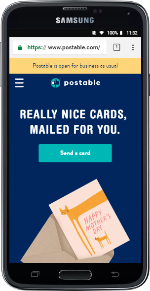
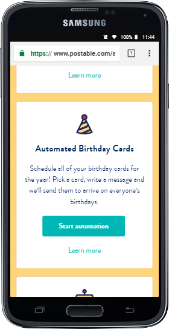
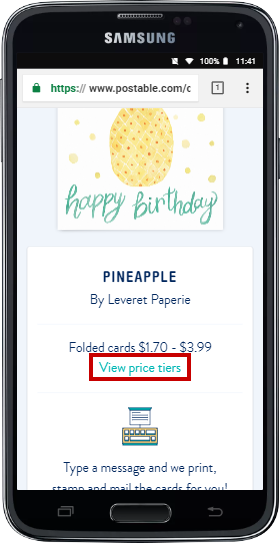
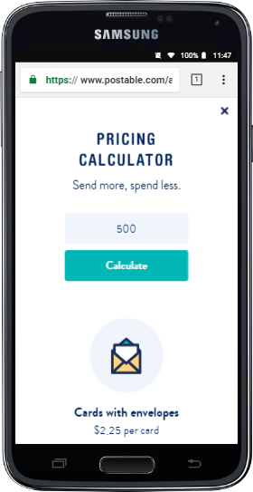

Last week we took a look at Postable's website, www.postable.com using our desktop machines and tested it for its usability. But, with billions of people using their mobile devices to access the internet every day, this week's post will be focused on the Postable site's mobile usability.
 Postable.com HomepageThe main goal of this study is to evaluate how effective Postable's website is when accessed using a mobile device. The study took place virtually over Zoom, which allowed for screen sharing of the participants' mobile devices. The sessions were observed and recorded as the participants were given a number of tasks to complete.
Methodology
Who was tested
Three participants, having the following characteristics, volunteered in this study to evaluate Postable's website from their smartphones.
Desktop Internet Usage
| Hours | Count |
|---|---|
| 0 to 10 hrs. wk. | |
| 11 to 25 hrs. wk. | 1 |
| 26+ hrs. wk. | 2 |
| TOTAL (Participants) | 3 |
Mobile Internet Usage
| Hours | Count |
|---|---|
| 0 to 10 hrs. wk. | 1 |
| 11 to 25 hrs. wk. | 2 |
| 26+ hrs. wk. | |
| TOTAL (Participants) | 3 |
Age Group
| Age | Count |
|---|---|
| 18-25 | |
| 26-39 | 3 |
| 45-59 | |
| TOTAL (Participants) | 3 |
Gender
| Gender | Count |
|---|---|
| Women | 2 |
| Men | 1 |
| TOTAL (Participants) | 3 |
What participants did
Each participant was asked to complete a total of 3 tasks which involved searching the website in order to complete the tasks. The sessions lasted between 10-20 minutes.
What data was collected
The data collected included the paths taken, the time spent on each task, and the task completion rate.
Detailed findings and recommendations
Task 1 - Find and purchase a greeting card
Your mother's birthday is coming up and you would like to send her a greeting card. Browse the greeting card offerings and purchase one for her.
- Number of Participants: 3
- Percent Successful: 100%
| Findings | Recommendations |
|---|---|
| All participants completed the task with ease by finding the birthday card offerings and adding the item to cart. | Add a feature to allow user to sort or filter cards. |
The participants were able to navigate successfully within the application to complete this task. The menu options were easy to identify and understand.
Task 2 - Find information on scheduling
You're interested in learning about how you can schedule multiple birthday cards for the entire year. Find where you can learn more about scheduling.
- Number of Participants: 3
- Percent Successful: 0%
| Findings | Recommendations |
|---|---|
| Results were inconclusive. 2 of the 3 participants were able to find information on scheduling however the information was not specifically related to mass mailings. | Consider changing the verbage to make information easier to find. |
Two of the three participants were able to find information relating to scheduling, however, the information was on individual greeting cards and not multiple cards. The third participant was not able to find any information related to scheduling and came to the conclusion that this was not an option on the site.
Scheduling details on multiple cards is found under the "mass mailing" heading, which was overlooked by all participants.
 Automate birthday cardsTask 3 - Find Pricing
You're interested in sending holiday greeting cards to all of your customers this year. Locate pricing on volume business greeting cards.
- Number of Participants: 3
- Percent Successful: 100%
| Findings | Recommendations |
|---|---|
| All participants were able to successfully complete the task of finding pricing on business greeting cards. | Change the color of the pricing calculator's text input box or border to indicate that it is an editable field. |
The participants were able to find their ways to the pricing calculator quickly and with ease. Two of the three participants accessed the pricing calulator through links found in the greeting card section. The third participant used the main menu to find the pricing calculator.
 Volume pricing on business cardsClicking in the text input field above the "Calculate" button allows people to input their own numbers but this field was missed by all of the participants as it's not obvious that this is an editable field.
 Pricing calculator for volume ordersKey Takeaway
Overall, the Postable site appears to work well in terms of mobile usability and even seems to be easier to use than the desktop version. The responsive design and layout of the mobile site makes it seem like it was made especially for people on the go.
Download test script here: PDF test script here
Images from Postable.com and by PhotoMIX Ltd. from Pexels.